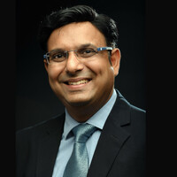

Inspiring Leaders in Data & AI

Manish Gupta
Manish Gupta is a distinguished researcher, technology leader, and one of the most respected figures in Artificial Intelligence research in India. With deep expertise in machine learning, natural language processing, and large-scale intelligent systems, he has played a major role in advancing both academic research and practical AI applications.
Over the years, Manish Gupta has contributed extensively to the development of data-driven solutions that address complex real-world challenges. His work reflects a strong blend of scientific depth and technological innovation, helping bridge the gap between advanced research and impactful industry use cases. He is also known for mentoring researchers and supporting the growth of AI talent in India.
Through his leadership in research and innovation, he has influenced the direction of intelligent computing and inspired many students and professionals to pursue excellence in Artificial Intelligence and Data Science. His contributions highlight the importance of combining analytical thinking, research-driven development, and practical implementation to shape the future of technology.

Nandan Nilekani
Nandan Nilekani is one of India’s most influential technology leaders, best known as the co-founder of Infosys and a key architect of the country’s digital transformation journey. Through his vision, leadership, and commitment to innovation, he has contributed significantly to the growth of India’s IT industry and the development of large-scale digital public infrastructure.
Beyond his role in building Infosys into a globally recognized technology company, Nilekani played a transformational part in shaping modern governance through technology. As the driving force behind Aadhaar, he helped establish one of the world’s largest biometric identity systems, enabling millions of citizens to access services more efficiently and strengthening the foundation for digital inclusion across the country.
His work spans technology, public policy, entrepreneurship, and economic reform. Nandan Nilekani is widely admired for his ability to connect innovation with real-world impact, especially in areas such as digital payments, data governance, and inclusive growth. His contributions continue to inspire students, professionals, and future leaders who aspire to use technology as a tool for large-scale social and national progress.